Chapter 06 · source-backed walkthrough
Flink: from API graph to physical tasks
Follow the graph transformations that determine where operators run and where records cross a process or network boundary. Chaining changes physical execution cost; key partitioning changes state ownership.
01
Four representations of one program
An API Transformation DAG describes the operations. StreamGraph adds streaming nodes, edges, partitioners and operator factories. JobGraph combines compatible operators into deployable vertices. ExecutionGraph expands vertices into parallel task executions and tracks their current attempts.
The construction location and executor path depend on deployment mode and scheduler. These graph types are conceptual / runtime representations, not four always-separate cluster services. Table planning produces runtime transformations; the same physical task and network mechanisms then execute them.
Logical intent becomes retryable attempts
Each step adds a different kind of execution information.

02
Chaining versus keyed exchange
StreamingJobGraphGenerator checks slot-sharing compatibility, chaining strategies, partitioner / exchange mode and parallelism constraints. A normal keyBy hash exchange breaks chaining. Compatible forward edges can become direct calls in one task.
A chain avoids an intermediate serializer and shuffle buffer boundary. It also ties those operators to a single task thread and failover unit. Breaking a chain adds transport and scheduling overhead but can expose independent parallelism and isolate a bottleneck.
Key groups make keyed state redistribution possible. The key is hashed into maxParallelism groups; each subtask owns a contiguous range for its current parallelism. Changing parallelism changes ownership ranges. State compatibility also depends on stable operator identity and serializers.
One keyBy creates a physical boundary
Source and map may be chained. The downstream keyed operator owns a different key-group range and receives shuffled data.

| Choice | Gain | Cost |
|---|---|---|
| Long operator chain | Fewer handoffs, serializers and buffers | CPU-heavy operator stalls the whole task chain. |
| More downstream parallelism | More independent key ranges | More channels, metadata and state redistribution work. |
| Stable max parallelism / operator IDs | Predictable restore and rescaling | Requires planning state compatibility before changes. |
| One hot business key | Simple per-key ordering | That key cannot scale by merely adding subtasks; repartition / pre-aggregation changes semantics. |
Inside the implementation
These excerpts come directly from the code paths used above. Expand a component to move from the system view into its implementation.
flink-graph StreamingJobGraphGenerator.java:1730
Physical chaining conditions.
flink/flink-runtime/src/main/java/org/apache/flink/streaming/api/graph/StreamingJobGraphGenerator.java · 07805482705f
1729
1730 public static boolean isChainable(StreamEdge edge, StreamGraph streamGraph) {
1731 return isChainable(edge, streamGraph, false);
1732 }
1733
1734 public static boolean isChainable(
1735 StreamEdge edge, StreamGraph streamGraph, boolean allowChainWithDefaultParallelism) {
1736 StreamNode downStreamVertex = streamGraph.getTargetVertex(edge);
1737
1738 return downStreamVertex.getInEdges().size() == 1
1739 && isChainableInput(edge, streamGraph, allowChainWithDefaultParallelism);
1740 }
1741
1742 public static boolean isChainableSource(StreamNode streamNode, StreamGraph streamGraph) {
1743 if (streamNode.getOperatorFactory() == nullTest source inspected or located, not executed: StreamingJobGraphGeneratorTest.java
flink-deploy TaskExecutor.java:663
TaskExecutor accepts a deployment descriptor and starts a task.
flink/flink-runtime/src/main/java/org/apache/flink/runtime/taskexecutor/TaskExecutor.java · 07805482705f
662 @Override
663 public CompletableFuture<Acknowledge> submitTask(
664 TaskDeploymentDescriptor tdd, JobMasterId jobMasterId, Duration timeout) {
665
666 final JobID jobId = tdd.getJobId();
667 JobInformation jobInformation = null;
668 try {
669 jobInformation = tdd.getJobInformation();
670 } catch (IllegalStateException ignored) {
671 // Expected when job information is offloaded to blob storage and not yet loaded.
672 } catch (IOException | ClassNotFoundException e) {
673 log.debug("Could not deserialize job information for early MDC enrichment", e);
674 }
675 try (MdcCloseable ignored =
676 MdcUtils.withContext(flink-keygroup KeyGroupRangeAssignment.java:63
Key hash maps into the max-parallelism key-group space.
flink/flink-runtime/src/main/java/org/apache/flink/runtime/state/KeyGroupRangeAssignment.java · 07805482705f
62 */
63 public static int assignToKeyGroup(Object key, int maxParallelism) {
64 Preconditions.checkNotNull(key, "Assigned key must not be null!");
65 return computeKeyGroupForKeyHash(key.hashCode(), maxParallelism);
66 }
67
68 /**
69 * Assigns the given key to a key-group index.
70 *
71 * @param keyHash the hash of the key to assign
72 * @param maxParallelism the maximum supported parallelism, aka the number of key-groups.
73 * @return the key-group to which the given key is assigned
74 */
75 public static int computeKeyGroupForKeyHash(int keyHash, int maxParallelism) {
76 return MathUtils.murmurHash(keyHash) % maxParallelism;flink-network CreditBasedPartitionRequestClientHandler.java:61
Remote input credits and partition requests use the shuffle data transport.
flink/flink-runtime/src/main/java/org/apache/flink/runtime/io/network/netty/CreditBasedPartitionRequestClientHandler.java · 07805482705f
60 */
61 class CreditBasedPartitionRequestClientHandler extends ChannelInboundHandlerAdapter
62 implements NetworkClientHandler {
63
64 private static final Logger LOG =
65 LoggerFactory.getLogger(CreditBasedPartitionRequestClientHandler.class);
66
67 /** Channels, which already requested partitions from the producers. */
68 private final ConcurrentMap<InputChannelID, RemoteInputChannel> inputChannels =
69 new ConcurrentHashMap<>();
70
71 /** Messages to be sent to the producers (credit announcement or resume consumption request). */
72 private final ArrayDeque<ClientOutboundMessage> clientOutboundMessages = new ArrayDeque<>();
73
74 private final AtomicReference<Throwable> channelError = new AtomicReference<>();